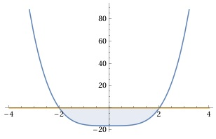

Aufgabe 53 Bestimmen Sie die Lösungsmenge der Ungleichung für x ∈ ℝ: (x2 + 4)(x2 - 4) ≤ 0 Nullstellen von (x2 + 4)(x2 - 4) = 0: x2 + 4 = 0 |-4 x2 = - 4 |ⱱ --> keine Nullstellen x2 - 4 = 0 |+4 x2 = 4 |ⱱ x1,2 = ± 2 Die Funktionswerte von -2 ≤ x ≤ 2 liegen unterhalb der x-Achse, erfüllen also die Bedingung ≤ 0. L = -2 ≤ x ≤ 2 oder (x2 + 4)(x2 - 4) ≤ 0 ist dann der Fall, wenn (x2 + 4) ≥ 0 gilt für alle x ∈ ℝ und (x2 - 4) ≤ 0 |+4 x2 ≤ 4|√ |x| ≤ 2 |x| = x für x ≥ 0 --> x ≤ 2 |x| = -x für x ≤ 0 --> -x ≤ 2 |+x - 2 x ≥ -2 (x2 - 4) ≤ 0 trifft zu für x ≤ 2 ∩ x ≥ -2 = -2 ≤ x ≤ 2 (x2 + 4)(x2 - 4) ≤ 0 trifft zu für L = x ∈ ℝ ∩ -2 ≤ x ≤ 2 L = -2 ≤ x ≤ 2
